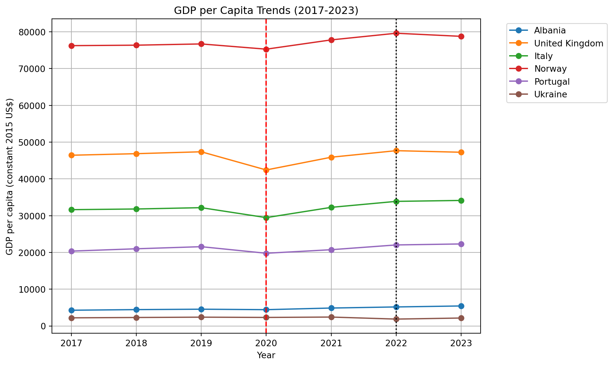
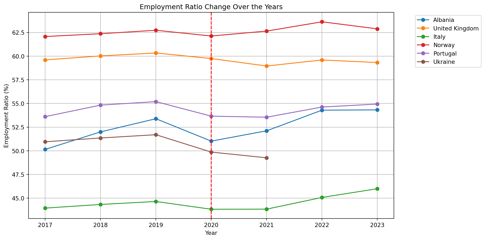
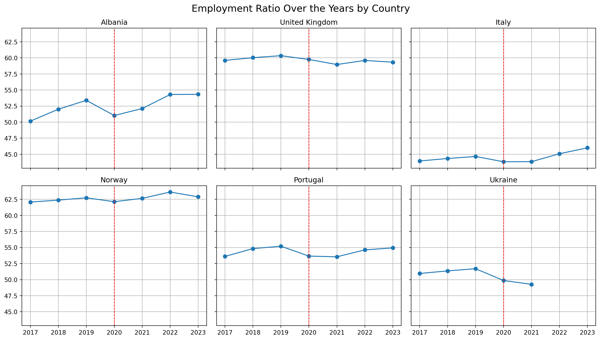
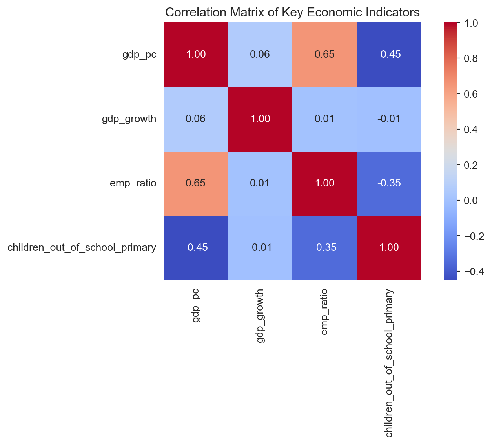

| iso_code | country_name | year | gdp_pc | emp_ratio | gdp_growth | children_out_of_school_primary | |
|---|---|---|---|---|---|---|---|
| 0 | ALB | Albania | 2017 | 4283.982627 | 50.152 | 3.283176 | 1139.424549 |
| 1 | ALB | Albania | 2018 | 4452.237147 | 52.000 | 3.671419 | 2234.391432 |
| 2 | ALB | Albania | 2019 | 4563.467363 | 53.391 | 2.062578 | 3575.110586 |
| 3 | ALB | Albania | 2020 | 4437.653469 | 51.026 | -3.313756 | 10359.000000 |
| 4 | ALB | Albania | 2021 | 4880.723462 | 52.115 | 8.969576 | 10881.000000 |
Economic Analysis of European Countries
Introduction
Context:
The global economy experienced one of the most significant disturbances in modern history during the 2020 Covid 19 pandemic. Prior to this disruption, Europe overall had relatively predictable economic development defined by gradual increase that stayed overall constant. However, the pandemic forced major economic activities to come to a halt with supply chain breakdowns resulting in the government having to intervene in the labor market to prevent total economic colapse. As we move into the post pandemic era, the pandemic has presented a unique opportunity to investigate how economies of vastly different scale and structure, ranging from established G7 powers to developing transition economies, absorbs shock and regains momentum during major disruptions.
The project examines the economic inidcators of six selected European countries: Portugal, the United Kingdom, Norway, Albania, Ukraine, and Italy. The countries were selected because they offer a diverse perspective of the European economic sphere. Norway and UK represent well established economies with higher income that have developed financial resources. Italy and Portugal represents southern European economies with varying levels of debt and labor market dynamics. Contrastingly Albania and Ukraine represent economies that are still undergoing development with unique challenges, with Ukraine further affected by the Russian invasion during the 2022 period that further complicates the recovery process from Covid 19.
Data Description:
We utilize data from World Bank’s World Development Indicators (WDI) database to conduct this analysis. We specifically focus on three major economic indicators to serve as proxies for the health of the nation’s economy: GDP per capita (constant 2015 US$), GDP growth (annual %), Employment to population ratio (15+, total %):
- GDP per capita (constant 2015 US$): This metric provides a view of individual economic wellbeing adjusted for inflation, allowing for accurate comparisons of wealth over time.
- GDP growth (annual %): This indicator measures the rate at which the economy is expanding or contracting showing us the rate at which the economy is being impacted or recovering.
- Employment to population ratio (15+, total %): This variable offers insight into the labor market’s ability to utilize its available human resources. This is especially a critical factor during the pandemic when lockdowns forced mass unemployment.
In addition to these major economic indicators we have also included a secondary inidcator: rate of primary school children out of school. Including this inidcator will provide a secondary dimension into the socioeconomic stability of the nations. The dataset we selected spans an eight year period from 2017 to 2024 giving us a comprehensive comparison of the pre covid baseline (2017-2019), the disruption year (2020), and the recovery period (2021-2024).
Research Objectives:
The primary objective of this analysis is to quantify the magnitude of the pandemic’s impact and the differing recovery speeds among these European countries.
Consequently, this project addresses the following research questions: How have GDP per capita, employment-to-population ratios, and GDP growth trends changed before and after COVID-19 across selected European countries, and what do these trends reveal about their economic development trajectories? Furthermore, which indicators are the most correlated with each other? Through time-series visualization and correlation analysis, this report seeks to map the economic scarring left by the pandemic and the varying paths toward recovery.
Data Analysis
GDP per capita
Code
plt.figure(figsize=(12, 6))
for country in df["country_name"].unique():
sub = df[df["country_name"] == country]
plt.plot(sub["year"], sub["gdp_pc"], marker="o", label=country)
plt.xlabel("Year")
plt.ylabel("GDP per capita (constant 2015 US$)")
plt.title("GDP per Capita Trends (2017-2023)")
plt.legend(bbox_to_anchor=(1.05, 1), loc="upper left")
# Mark major events
plt.axvline(
x=2020,
color='r',
linestyle='--',
linewidth=1.5,
label='COVID-19 Pandemic (2020)'
)
plt.axvline(
x=2022,
color='black',
linestyle=':',
linewidth=1.5,
label='Invasion of Ukraine (2022)'
)
plt.grid(True)
plt.tight_layout()
plt.savefig('../figures/gdp_per_capita.png')
plt.show()
The GDP per capita trends reveal a distinct tripartite economic stratification among the selected countries, where the magnitude of global shocks is visually relative to the baseline wealth of the nation.
High-Income Stability: Norway and the United Kingdom occupy the upper tier of the analysis. Norway exhibits exceptional stability; the 2020 pandemic shock appears as a minor fluctuation against its high baseline wealth (approx. $75k–$80k), followed by a return to gradual growth. The United Kingdom displays a clearer “V-shaped” impact in 2020, dropping toward $42k before recovering. However, the UK’s trajectory notably flattens post-2022, suggesting a slowing of momentum in the post-pandemic recovery phase compared to Norway’s steady rise.
Southern European Parallelism: Italy and Portugal follow strikingly parallel paths in the middle-income band. Both nations show clear, synchronized contractions in 2020—likely driven by the vulnerability of their service and tourism-oriented sectors to lockdowns. Their recovery from 2021 to 2023 has been consistent and positive, with both lines trending upward in unison, though neither shows signs of aggressive expansion beyond pre-pandemic trends.
Emerging Economies and Divergence: The most critical insight lies in the lower income band (below $10k), where the scale of the graph compresses the visual volatility. Both Albania and Ukraine begin with similar baselines and flat trajectories pre-2020. However, a significant divergence occurs at the 2022 mark. While Albania continues a slow but steady upward “catch-up” trend, Ukraine’s trajectory decouples, flattening and dipping slightly. While the absolute drop appears small due to the Y-axis scale being stretched by Norway’s wealth, this stagnation represents a profound economic deviation caused by the 2022 invasion, effectively halting the development momentum seen in its peer, Albania.
Labor Market Participation
Code
plt.figure()
plt.figure(figsize=(12,6))
for country in df["country_name"].unique():
sub = df[df["country_name"] == country]
plt.plot(sub["year"], sub["emp_ratio"], marker="o", label=country)
plt.xlabel("Year")
plt.ylabel("Employment Ratio (%)")
plt.title("Employment Ratio Change Over the Years")
plt.legend(bbox_to_anchor=(1.05, 1), loc="upper left")
plt.axvline(
x=2020,
color='r',
linestyle='--',
linewidth=1.5,
label='Start of COVID-19 (2020)'
)
plt.grid(True)
plt.tight_layout()
plt.savefig('../figures/employment_ratio.png')
plt.show()<Figure size 672x480 with 0 Axes>
This graph shows a uniform COVID-19 shock across these six countries in 2020, followed by divergent recovery trajectories. The general drop in 2020 indicates a disruption to all the labor markets; however, the speed and robustness of the subsequent recovery varied considerably.
Norway shows the most resilient pattern: following a marginal decrease in 2020, its employment ratio rapidly rebounded, passing pre-pandemic levels by 2022. This performance indicates a robust labor market and successful economic stabilization policies.
The UK also recovered, albeit at a slower pace, stabilizing slightly below its 2019 peak. This suggests the persistence of post-pandemic labor shortages and structural economic adjustments. Portugal experienced a notable contraction in 2020 but showed a consistent recovery through 2023, reflecting the gradual reabsorption of workers as the tourism and services sectors reopened.
Albania endured a sharper pandemic-era decline than its Western European counterparts but subsequently demonstrated a powerful resurgence, surpassing its pre-COVID levels by 2022. This trajectory may be attributed to enhanced labor participation or rapid recovery in key domestic industries.
Italy consistently maintains the lowest employment ratio. While the COVID-19 crisis exacerbated its underlying structural weaknesses, the nation has registered a modest upward trend since 2021. This improvement, while discernible, remains constrained by long-standing challenges, particularly low rates of female and youth employment.
In contrast, Ukraine’s path deviates significantly from the broader recovery pattern. Following its 2020 decline, its employment ratio continued to fall after 2021 due to the ongoing conflict. This decline reflects large-scale population displacement, widespread economic disruption, and severe demographic shocks. Collectively, the data illustrate that while most European nations had recovered from the COVID-19 impact by 2022 or 2023, Ukraine’s situation underscores the profound and protracted effects of conflict on labor markets and overall economic stability.
Number of children out of (Primary) School
Code
df['year'] = df['year'].astype(int)
df_clean = df.dropna(subset=['children_out_of_school_primary']).copy()
sns.set_style("whitegrid")
plt.figure(figsize=(12, 7))
# Generate Plot
for country in df_clean['country_name'].unique():
country_data = df_clean[df_clean['country_name'] == country]
plt.plot(
country_data['year'],
country_data['children_out_of_school_primary'],
marker='o',
linestyle='-',
label=country
)
# Add COVID-19 Line
plt.axvline(
x=2020,
color='r',
linestyle='--',
linewidth=1.5,
label='Start of COVID-19 (2020)'
)
plt.title(
'Children Out of School (Primary) Trends Across Selected European Countries, 2017-2023',
fontsize=16
)
plt.xlabel('Year', fontsize=12)
plt.ylabel('Children Out of School, Primary (SE.PRM.UNER)', fontsize=12)
plt.legend(title='Country', loc='upper right')
plt.grid(True, linestyle=':', alpha=0.6)
plt.xticks(np.arange(df['year'].min(), df['year'].max() + 1, 1))
plt.ticklabel_format(style='plain', axis='y')
plt.savefig('../figures/children_out_of_school_analysis.png')
plt.show()
The graph highlights highly divergent trajectories across the six countries following the COVID-19 onset in 2020; the pandemic acted more as a stress test than a uniform shock to education systems. Due to Ukraine’s large baseline number, the trends of the other five nations are heavily compressed, emphasizing the scale differences.
Albania and Italy demonstrated a concerning increase in the out-of-school number following 2020. Albania’s number surged from 3,575 in 2019 to over 17,000 by 2023. Italy, which consistently has the highest non-Ukraine value, peaked significantly in 2022, suggesting that pandemic-related disruptions exacerbated structural weaknesses in retention or access in both countries.
The United Kingdom and Portugal both showed a clear decline in the out-of-school population that began before 2020, reaching their lowest levels around 2020-2021. This trajectory indicates that strong pre-existing enrollment policies maintained their effectiveness, showing high resilience to the crisis. Norway similarly maintained a stable and very low number throughout the entire period, reflecting a robust education system.
Ukraine maintained a high number of children out of school through 2021. The lack of data for 2022 and 2023, coupled with the known effects of conflict on population and labor markets, strongly suggests a severe and protracted deterioration in educational access beyond the scope of the pandemic alone.
Correlation Analysis of Key Economic Indicators
Code
# Select variables for correlation analysis
corr_vars = df[[
"gdp_pc",
"gdp_growth",
"emp_ratio",
"children_out_of_school_primary"
]]
# Compute correlation matrix
corr_matrix = corr_vars.corr()
# Plot correlation heatmap
plt.figure(figsize=(8,6))
sns.heatmap(
corr_matrix,
annot=True,
fmt=".2f",
cmap="coolwarm",
square=True
)
plt.title("Correlation Matrix of Key Economic Indicators")
plt.tight_layout()
plt.show()
This correlation matrix summarizes the relationships among GDP per capita, GDP growth, employment-to-population ratio, and primary school children out of school across the six European countries. The most notable positive relationship appears between GDP per capita and employment ratio (0.65), indicating that countries with stronger labor market participation tend to have higher income levels. This suggests that long-term economic development and labor utilization move closely together.
In contrast, GDP growth shows very weak correlations with all other variables, implying that short-term economic fluctuations do not strongly align with structural indicators such as income level, employment conditions, or education outcomes. This highlights that growth rates can be highly volatile and influenced by temporary shocks, especially during crisis periods like COVID-19.
The negative correlation between children out of school and GDP per capita (−0.45) suggests that higher-income countries generally experience lower levels of educational disruption, reflecting better access to schooling and stronger institutional capacity. Similarly, the negative relationship between children out of school and employment ratio (−0.35) indicates that weaker labor markets tend to coincide with poorer educational outcomes.
Overall, the correlation results reveal a clear structural linkage between economic development, labor market strength, and educational stability, while GDP growth remains largely independent. These findings complement the time-series results by showing that although short-term growth fluctuates sharply during COVID-19, long-run development indicators remain tightly connected.